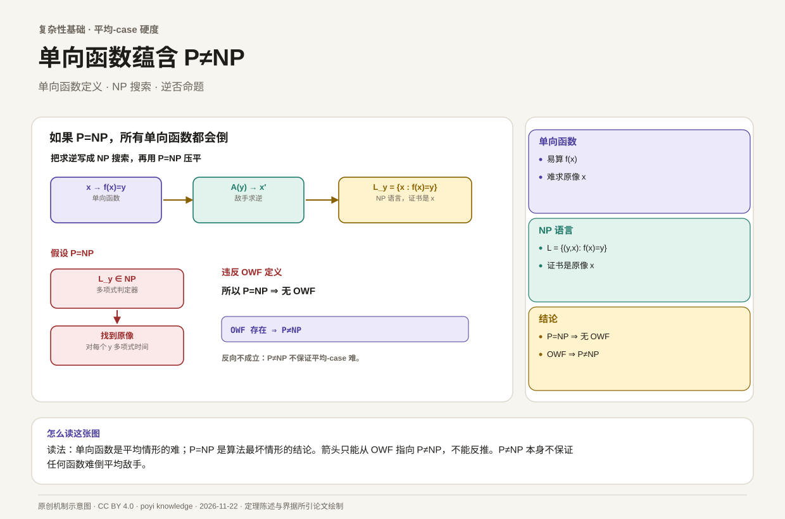
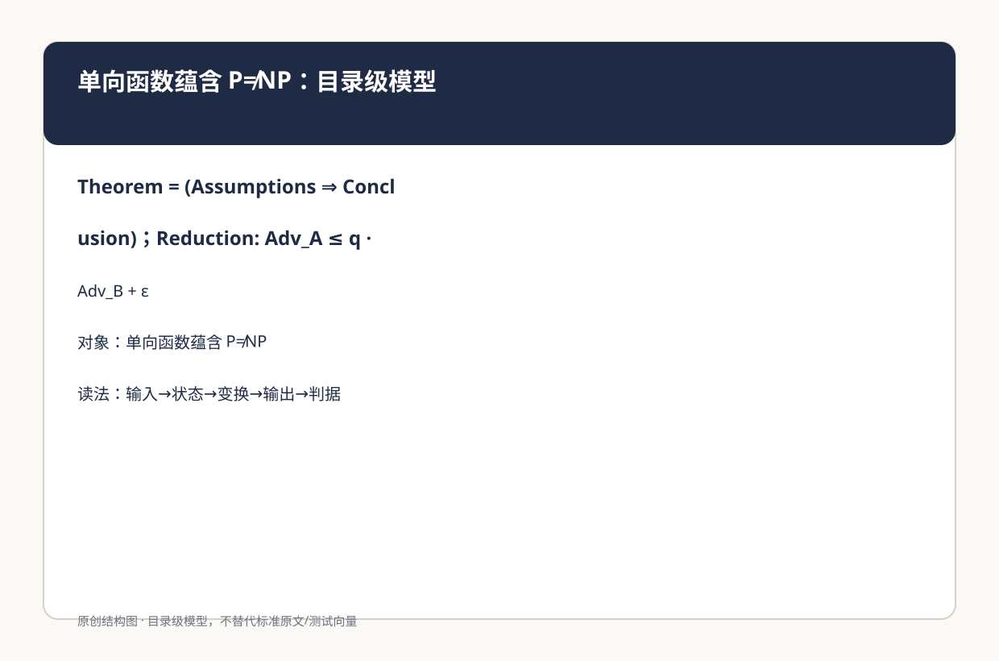

原理与机制
定理：单向函数蕴含 P≠NP（One-Way Functions Imply P≠NP）。### 单向函数
单向函数 f: {0,1}* → {0,1}* 要求：存在多项式时间算法计算 f(x)；但对所有概率多项式时间敌手 A，给定 y=f(x)（x 按某个分布选取），A 输出原像 x′ 且 f(x′)=y 的概率可忽略。这里的“难”是平均-case，不是单个最坏实例。### 把求逆写成 NP 语言
L_y = { x : f(x) = y }。x 是成员证书：给定 x，验证 f(x)=y 只需一次多项式时间计算。因此 L_y 在 NP 中。若 P=NP，则存在多项式时间判定算法判定 L_y；对每个 y，它能在多项式时间内找到一个原像（或判定无解）。这直接违反单向函数的定义。### 逆否命题
所以 P=NP ⇒ 不存在单向函数；等价地，单向函数存在 ⇒ P≠NP。注意证明只用了“P=NP 可解 NP 搜索”，没有给出从 P≠NP 到单向函数的反方向。

为什么重要
它把密码学的最小假设接到复杂性理论的最大 open problem 上：如果有一天 P=NP，不只是 RSA 或 AES 的某个结构会坏，所有依赖平均-case 求逆困难性的单向函数都不再安全。### 它不证明什么
P≠NP 只说明存在某个 worst-case 难的 NP 问题，不说明存在平均-case 难的函数。密码学需要的是“随机实例难”，而不是“存在一个难实例”。因此 P≠NP 是必要条件，不是充分条件。### 对参数选择的含义
构造密码方案时不能引用“P≠NP 所以安全”。必须把安全性归约到具体的单向函数、伪随机生成器或格问题等平均-case 假设，并给出敌手优势界。
应用与实例
1.在教材中，这条蕴含用来解释为什么单向函数是密码学的最小硬度假设。2.在安全证明中，若方案能由单向函数构造，则其安全性间接依赖 P≠NP；但证明仍要给出具体的归约。3.在复杂度教学中，它把“求逆”写成 NP 搜索，是理解 NP 证书与搜索复杂度的标准例子。4.在负面结果中，它说明任何 P=NP 的算法都会同时打破所有 OWF，而不仅是一个方案。### 不能怎么用
不能用它来给具体密钥长度背书，也不能用它来证明某个函数是单向的。单向函数的存在性本身仍是未证明的假设。

边界与攻击面
P≠NP 不蕴含单向函数存在。一个 NP 问题可以在 worst-case 难，但绝大多数实例容易；密码学需要平均-case 硬度。Impagliazzo 的“五个世界”把这种差别讲得很清楚：在“Pessiland”里 P≠NP，但没有单向函数。1.量子敌手：量子算法可以打破 RSA/ECC 所依赖的特定 OWF，但“OWF ⇒ P≠NP”仍是经典复杂性陈述。2.非均匀敌手：线路复杂度与非均匀安全性需要另一套假设。3.分布依赖：OWF 的“难”依赖输入分布；对某些分布容易的函数不能算 OWF。4.最坏-case 与平均-case 的桥：从 worst-case 难问题构造 OWF 通常需要额外的 worst-case 到 average-case 归约。5.证明技术：P≠NP 本身尚未证明，所以这条蕴含是条件性的，不是已证实的存在性定理。这条蕴含是逻辑关系，不是安全证明。它告诉我们“P=NP 会摧毁 OWF”，不告诉我们“P≠NP 足以构造 OWF”。
历史与背景
Diffie 与 Hellman 在 1976 年把单向函数作为公钥密码的概念基础。Goldreich 在《Foundations of Cryptography》中系统化其定义，并明确平均-case hardness 与 worst-case 复杂性的区别。### 教科书中的位置
Katz 与 Lindell 的《Introduction to Modern Cryptography》把 OWF 作为密码学原语的起点，并用“若 P=NP 则无 OWF”说明密码学假设与复杂性理论的联系。这个陈述通常作为练习或引理出现，不是 P vs NP 问题的完整解答。
逐步示例与核验
形式模型与复算步骤
[\Pr[\mathrm{Bad}_A(\lambda)]\le \varepsilon(\lambda)]
单向函数蕴含 P≠NP的公开参数、密钥/随机数与消息；变量说明：Bad 为归约中定义的失败事件，ε 为可忽略函数。1.定义失败事件。2.构造归约把攻击者转成困难问题求解器。3.证明失败概率上界。边界：公式只覆盖已登记的参数与假设；参数取值、标准版本和实现细节仍以来源为准。
参考出处
- Wikipedia search entry for 单向函数蕴含 P≠NP. https://zh.wikipedia.org/w/index.php?search=%E5%8D%95%E5%90%91%E5%87%BD%E6%95%B0%E8%95%B4%E5%90%AB%20P%E2%89%A0NP
- Handbook of Applied Cryptography (Menezes, van Oorschot, Vanstone). https://www.cacr.math.uwaterloo.ca/hac/